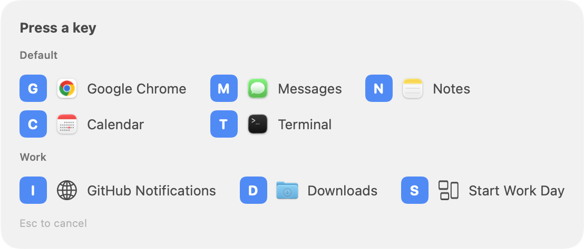
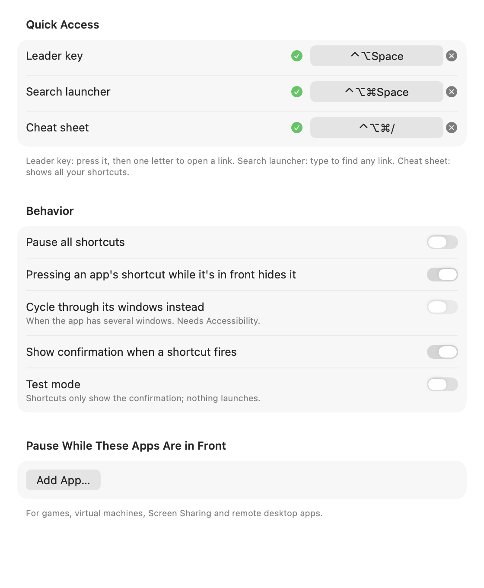

Getting started
- Open QuickLaunch. A ⚡︎ icon appears in your menu bar.
- Choose Manage QuickLaunch…, then click + › Application…. You can also drag apps, files or folders into the window, or choose Add “App” to QuickLaunch from the menu while that app is in front.
- Click Record Shortcut and press a combination such as ⌃⌥⌘C. Esc cancels and ⌫ clears.
- Press the shortcut once more when asked. A ✓ means it works.
Link types
| Type | What it does |
|---|---|
| Application | Opens or focuses the app. Pressing the shortcut again can hide the app or cycle its windows. |
| URL | Opens in your chosen browser. Any scheme works: https:, mailto:, slack: and so on. |
| File or Folder | Opens with its default app. ~ is allowed. |
| Shell Command | Runs with /bin/zsh -lc in your home folder. You get a notification if it fails. |
| Shortcuts.app Shortcut | Runs a shortcut from the Shortcuts app by name. |
| Workspace | Opens several of your other links in order. |
Conflicts & testing
When you record a shortcut, QuickLaunch checks it against:
- Other QuickLaunch links and the leader, launcher and cheat-sheet shortcuts.
- macOS system shortcuts such as Spotlight, Mission Control, screenshots and input sources.
- Other apps' global hotkeys registered exclusively.
- Custom App Shortcuts you created in System Settings › Keyboard › Keyboard Shortcuts › App Shortcuts.
- Services keyboard shortcuts.
- Menu shortcuts of running apps, if you turn on the optional app-menu scan (needs Accessibility).
Each link shows a status icon:
- Green: active.
- Green seal: tested and working.
- Orange: active, but also used elsewhere.
- Red: unavailable.
Click the icon for details and a Test Now button. Nothing launches while a test is running.
Leader key
Set a leader shortcut in Settings › Shortcuts › Quick Access, for example ⌃⌥Space. Press it, and an overlay shows one letter per link. Press that letter.
Letters are picked from link names automatically. To choose your own, set Leader key in the link editor. The Manage window shows each link's letter.

Search launcher & cheat sheet
The search launcher does fuzzy search over all your links. Use ↑ ↓ and ↩ to choose, or ⌘1–⌘9. With nothing typed, it lists your most used links.
The cheat sheet lists every shortcut by group. Press any key to close it.
You can open both from the menu bar menu, or give each its own shortcut in Settings.
Favorites & icons
Click the ☆ next to any link in the Manage window, or use Add to Favorites from its context menu or the link editor. Favorites:
- get a Favorites section at the top of the menu bar menu,
- come first in the search launcher,
- get first pick of automatic leader-key letters.
Icons. Website links show the site's own icon. QuickLaunch fetches it directly from the site (no third-party service sees your links) and caches it on your Mac.
To use your own icon, open the link editor and click Choose… next to Icon. Pick any image, or an app to use its icon; you can also drop one onto the preview. Custom icons sync through iCloud with the rest of your setup. Use Default goes back to the automatic icon.
If a website changes its logo, use Settings › Advanced › Refresh Website Icons.
Workspaces
Choose + › Workspace…, tick the links to include, and give the workspace a shortcut. They open in the order you ticked them, a moment apart, and the last one ends up in front.
Pausing shortcuts
- Pause All Shortcuts from the menu bar menu turns everything off until you turn it back on.
- Settings › Shortcuts › Pause While These Apps Are in Front does it automatically, for example for games, VMs or Screen Sharing.
- Test mode keeps shortcuts on but only shows a confirmation instead of launching anything.
Window features optional
These need the Accessibility permission (Settings › Advanced). QuickLaunch's shortcuts work without it.
- Cycle windows: pressing an app's shortcut while it's in front moves to its next window.
- Window placement: in the link editor, choose left half, right half, top half, bottom half, maximize or center. It applies on the screen your pointer is on.
- App-menu scan: also flags combinations used in running apps' menus.
iCloud sync & backups
Turn on Settings › Sync › Sync with iCloud Drive. Your links and settings go to iCloud Drive/QuickLaunch/QuickLaunch.json. When two Macs both change something, the most recent change wins, and the copy it replaces is backed up locally.
Usage stats stay on each Mac. Manage › More › Export… saves a JSON file. Import… can merge it with your setup or replace it.
Settings
| Tab | What's there |
|---|---|
| General | Launch at login, menu bar icon, Dock icon, recent items, groups as submenus, browser for URLs. |
| Shortcuts | Leader, launcher and cheat-sheet shortcuts; hide or cycle behavior; confirmation overlay; test mode; per-app pausing. |
| Sync | iCloud Drive sync and automatic updates. |
| Advanced | Accessibility permission, app-menu scan, settings folder, reset stats. |
| About | Version, links to these docs and support, report a problem. |
